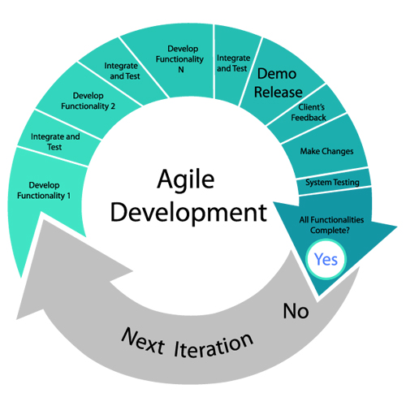

Agile ehk välearendus
kiire tarkvaraarendus, kus kasutatakse agiilseid metoodikaid.
Selle järgi peetakse projekti läbikukkumist tarkvara arendamise kõige kulukamaks aspektiks ning seetõttu
on seda tüüpi tarkvaraarenduse eesmärk korraldada tööd viisil, mis suurendaks edu saavutamise tõenäosust.
Tähtsustatakse võimet muudatustele reageerida, et olla edukas ebakindlas ja muutuvas keskkonnas.
Tuntud oma tõhususe poolest jagab Agile Model SDLC faasid väiksemateks iteratsioonideks,
võimaldades arendusmeeskondadel teha järkjärgulisi muudatusi tarkvarale.
See lähenemine hõlbustab kiiret probleemide avastamist ja sobib ideaalselt projektidele,
mis vajavad aja jooksul paindlikkust ja kohanduvust.

Põhimõtted:
Hindame enam inimesi ja nende suhtlemist kui protsesse ja arendusvahendeid
Hindame enam töötavat tarkvara kui täiuslikku dokumentatsiooni
Hindame enam koostööd kliendiga, kui läbirääkimisi lepingute üle
Hindame enam muudatustega hakkamasaamist kui algse plaani järgimist
Koduleht
Ainemapp Koduleht
Kasutatud materjal